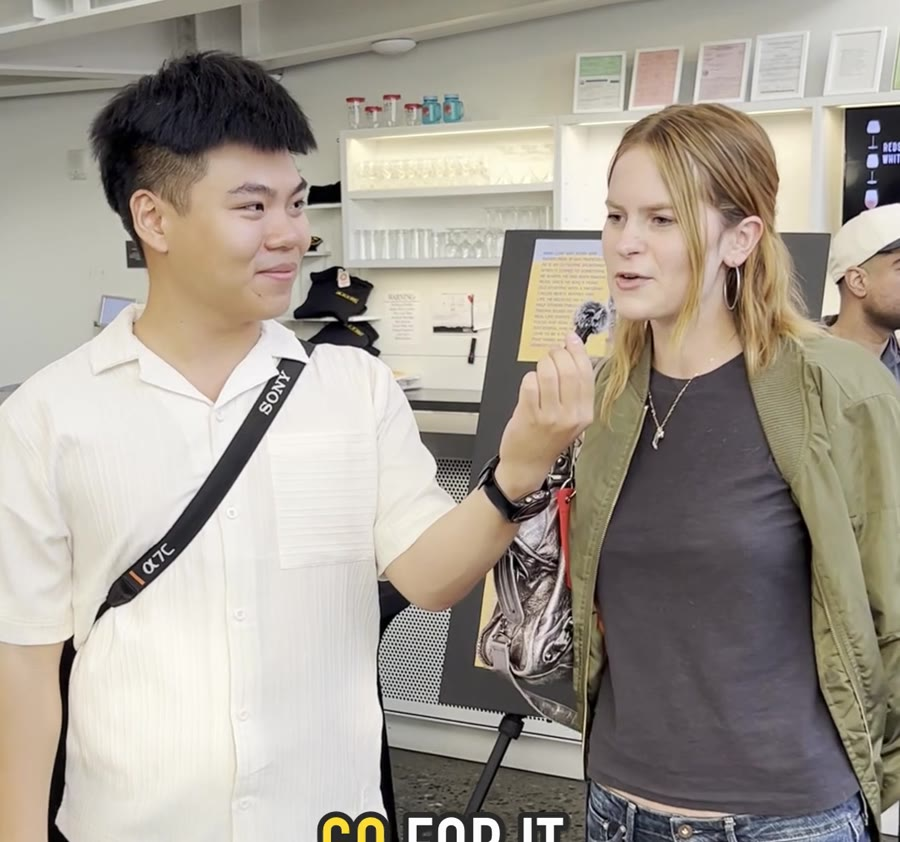
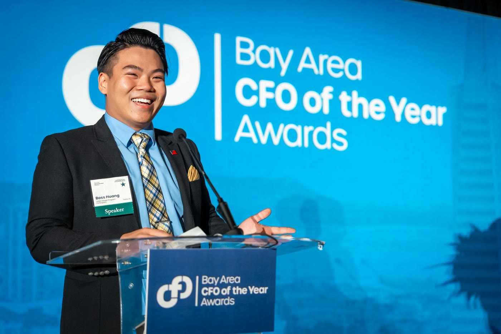
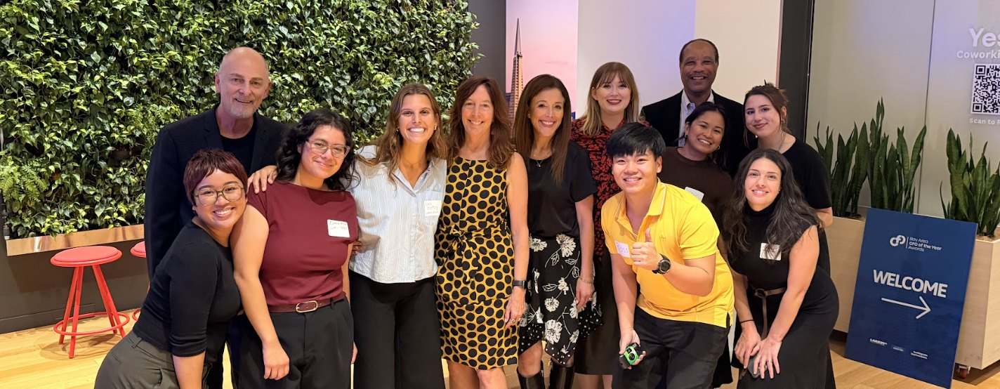

From the other side of the door
My YouthForce marketing internship at Larkin Street Youth Services, told in chapters: learning the brand, filming Performing Arts Night, writing, the stage and the lens, and a final integrated campaign that launches in November.
Both sides of the door
The first time I walked into Larkin Street, I wasn’t an intern. I was a young person who needed a bed. I joined YouthForce in late summer 2026 to bring that lived perspective to the Marketing & Communications team, and to do real work the team could use after I left.
About 20 hours a week, between the Larkin Street Academy and the admin office on Market Street, with check-ins twice a week with my supervisors, Lea Fabro and Czeric Bennett. The tools: HubSpot, Canva, Asana and WordPress.
Listening first
Larkin Street had just rebranded. Before making anything, I studied how it talks.
Studied the new brand, the website and every social channel. Four traits stood out: asset framing, brevity (impact headlines of 4–8 words), voice that shifts by audience, and 40+ years of Larkin Yellow.
HubSpot for email and social, Canva for content, Asana for projects, WordPress for the website.
“A homeless young person.”
Leads with the hardship, so it becomes who they are.
That one rule, lead with the person and not the crisis, changed how I wrote everything that followed. Homelessness is one chapter, not the whole story.
Pass the Mic
Performing Arts Night 2026, “Golden Revolution,” at A.C.T.’s Strand Theater: my first time behind the camera for Larkin Street.

A six-page on-camera guide: questions for staff, youth, performers, guests, donors and leadership, plus a production checklist (media releases first, full-sentence answers, vertical and horizontal).
Guest interviews, photos and B-roll from reception to standing ovation.
Selected and edited the photos and wrote the caption.
A 90-second main video and three 30-second cuts with performers and staff, each delivered captioned and clean, so the team can reuse them across channels.
Words that work
Writing for donors, families, youth and the public, each in its own register.
Annotated a 17-page case for support: 11 corrections, 14 style suggestions and 4 fact-check queries, including statistics that didn’t match across pages, caught before it reached donors.
Five young people’s stories and my own, written in the format of the Our Impact page: who the young person is first, the programs that helped, and where they’re headed. Every quote is verbatim from a source, with leads for future editions.
A community story about a family that turned a birthday party into kit-building for young people at Larkin Street.
A reflection on the internship for young people thinking about YouthForce.
The stage and the lens
Larkin Street gave me time to build my own brand, then put me in front of a room.
Dedicated personal-branding time: I designed the cards and refreshed my portfolio, and Larkin Street printed them.
Told a room of finance leaders how Larkin Street invested in me before I could prove the return, and asked them to do the same for others.
Event photography, including Mayor Daniel Lurie’s visit.


“People believed in my future returns, even before I could prove it.”
From my CFO Awards speechAn integrated campaign
For Bay Area working adults, about what happens at Larkin Street after housing. It launches Nov 2, and the full case study follows once it’s public.
Interviews with staff and the arts team set the story and the naming rules.
An audience-specific SWOT, personas, customer journeys, a timeline and a KPI for every stage.
Feedback from fundraising leadership sharpened the theme and who shares it first.
A social series, an email, print and a volunteer survey, in the Canva and HubSpot formats the team already uses.
Final presentation to the team, ready to measure from launch.
- Listen before you make anything. Interviews and feedback shaped every version.
- One goal beats three. The plan got stronger each time it got simpler: four versions, each narrower than the last.
- Design for the handoff. Everything lives in formats the team already uses.
- Next time: start consent and filming earlier, and name a video editor and budget up front.
Thank you, Larkin Street.
To Czeric, Lea and everyone who made time for my questions. I graduate from Minerva University in May 2027, and I’m taking this way of telling stories with me: lead with people, say one thing clearly, and listen first.


Working on something that needs strategy and a builder in the same room? Let’s talk.